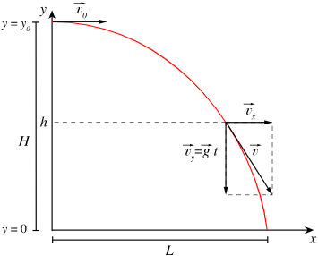
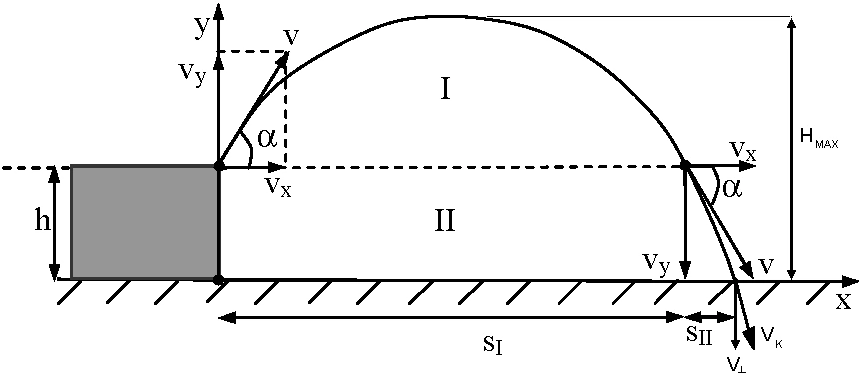
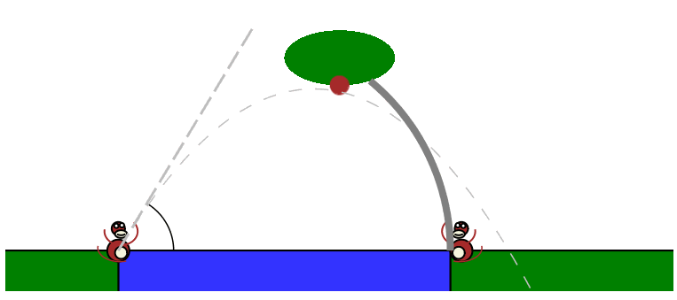

Rzutem poziomym nazywamy ruch w jednorodnym polu grawitacyjnym z prędkością początkową prostopadłą do kierunku pola.
Obiekt wyrzucany jest z pewnej wysokości początkowej H0 nad poziomem zerowym z pewną prędkością początkową V0.
Gdy pominiemy opory ruchu, trajektoria rzutu opisana jest parabolą, jest to zasługa złożenia ruchów w pionie i poziomie, gdzie:
siła grawitacji g zmienia położenie pionowe obiektu w sposób jednostajne przyspieszony,
prędkość początkowa V0 umożliwia ruch jednostajny w poziomie.

Rys.1 Wykres rzutu poziomego.
Zastosowanie rzutu poziomego w rożnych dziedzinach.
Opis ruchu rzutu poziomego
(Pomijamy opory ruchu)
Podczas rzutu poziomego obserwujemy równoczesny ruch w kierunku poziomym oraz w kierunku pionowym. Rzut jest więc złożeniem dwóch ruchów.
W kierunku poziomym ruch ciała jest jednostajny prostoliniowy z prędkością początkową Vo.
W kierunku pionowym ruch jest jednostajnie przyspieszony bez prędkości początkowej. Na ciało wówczas działa siła cięzkości.
Opis tekstowy
Wzór
Wartość prędkości poziomej
$$Vx = Vo = const$$
Wartość prędkości pionowej
$$Vy = -g*t$$
Zasięg maksymalny
$$ z = Vo * \sqrt{2*Ho \over g}$$
Czas spadku swobodnego
$$ts = \sqrt{2*Ho\over g}$$
Równanie toru rzutu poziomego
$$y = Ho - {g*x^2 \over 2 * Vo^2}$$
Rzut ukośny
Rzutem ukośnym nazywamy ruch w jednorodnym polu grawitacyjnym z prędkością początkową o kierunku ukośnym do kierunku pola.
W rzucie ukośnym mamy do czynienia z lotem ciała wyrzuconego z poziomu zerowego lub z pewnej wysokości H0.
Obiektowi nadawana jest pewna prędkość początkowa o wartości V0, która jest skierowana pod pewnym kątem alpha do poziomej osi układu współrzędnych.
Podobnie jak w przypadku rzutu poziomego, gdy pominiemy opory ruchu, trajektoria rzutu ukośnego będzie określona przez parabolę.

Rys.1 Wykres rzutu ukośnego z pewnej wysokości h.

Zastosowanie rzutu ukośnego.
Opis ruchu rzutu ukośnego
(Pomijamy opory ruchu)
Skoro w naszych rozważaniach pomijamy opory ruchu to w prosty sposób możemy rozłożyć ruch złożony, jakim jest rzut ukośny, na składowe X oraz Y.
Składowa pozioma prędkości Vo jest stała - wzdłuż osi OX nie występuję żadne przyspieszenie.
Składowa pionowa prędkości Vo jest zmienna - podzielimy ją na dwa etapy:
Ruch od wysokości początkowej do osiągnięcia maksymalnej wysokości. Prędkość Vy wówczas maleje,
Ruch od wysokości maksymalnej do osiągnięcia wysokości minimalnej - 0. Prędkość Vy wówczas rośnie.
Poniższa strona jest rozwiązaniem projektu nr 1 z przedmiotu Techniki Internetowa 2020.
Wykorzystane technologie:
HTML5
CSS 3.0
JavaScript
Temat i zawartość merytoryczna
Tematem projektu jest symulacja rzutu poziomego oraz ukośnego. Strona internetowa zawiera górne menu dzięki któremu wygodnie można się przemieszczać pomiędzy sekcjami strony.
Informacje będące wstępem teoretycznym do zagadnień rzutów znajdują się pod opcjami:
rzut poziomy - teoria,
rzut ukośny - teoria.
Symulacje obrazujące wybrane zagadnienie fizyczne zostały umieszczone pod opcjami:
rzut poziomy,
rzut ukośny.
Działanie symulacji
Interfejs symulacji składa się z:
elementu canvas, umożliwiającego wyświetlanie symulacji,
tabeli z aktualizowanymi parametrami rzutu,
pól wyboru parametrów startowych symulacji,
przycisku odpowiadającego za wyświetlenie prostej animacji.
Trajektoria aktualizowana jest po zmianie dowolnego parametru początkowego, a po naciśnieciu przycisku "symulacja" pojawia się prosta animacja.
Reset symulacji następuje po zmianie parametrów początkowych.
Język HTML5
Korzystając z elementów języka HTML wykonano szkielet strony wraz z odpowiednim formatowaniem treści. Wykorzystano elementy takie jak:
<header>, <nav>, <article>, <video>, <footer>.
Przy użyciu elementu <canvas> wykonano przedstawienie graficzne rzutów.
Język JavaScript
Do modyfikacji dokumentu HTML5 posłużono się elementami języka JavaScript i funkcjami takimi jak: getElementById oraz innerHTML.
Funkcje on... umożliwiły obsługę zdarzeń, a operacje na własnościach styli: style.display : none/block.
Walidacja
Strona waliduje się poprawnie na stronie W3C zgodnie ze standardem HTML5 i CSS.